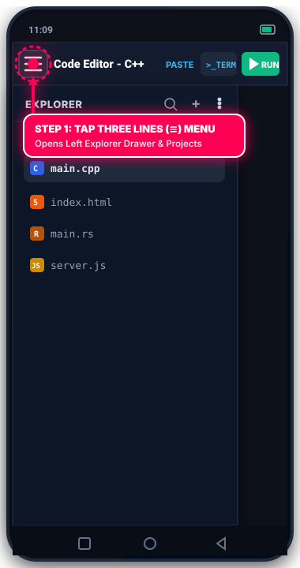
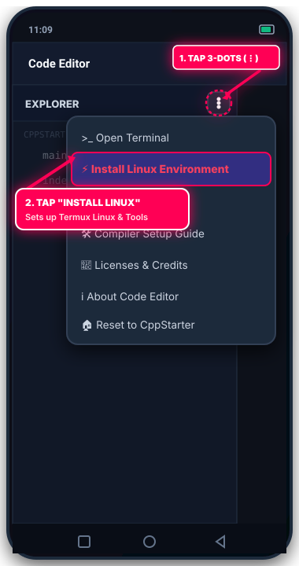
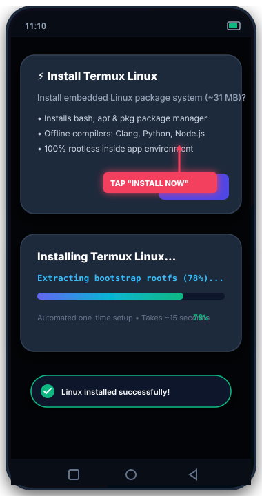
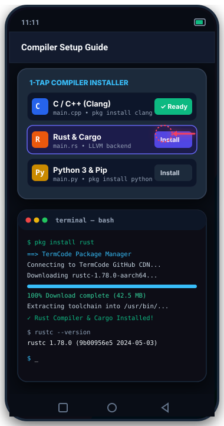
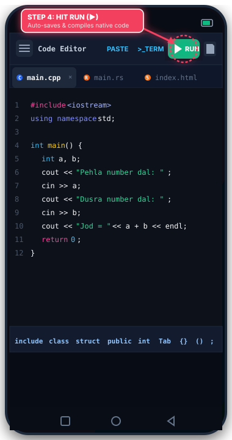
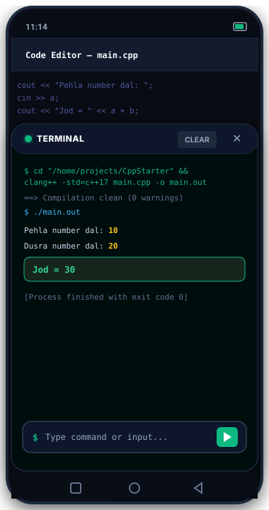

How To Setup & Use Code Editor App
Complete step-by-step visual guide with real app screenshots and glowing pointer arrows. Learn where to click, how to install the Linux environment, add compilers, and run code.
Tap Three Lines (≡) Menu to Open Explorer
When you first open Code Editor, tap the Three Lines (≡) / Folder icon located in the top toolbar (pointed by the glowing red arrow). This slides open the EXPLORER drawer on the left side of your screen.
-
Click 1: Tap the Three Lines (≡) button in the top action bar.
-
Explorer Slides Open: Shows project directories (
CppStarter), default source files (main.cpp,index.html), and explorer management controls. -
Add Files [+]: You can tap the [+] icon in the explorer header to create new files or folders anytime.


Tap Three-Dots (⋮) & Select "Install Linux"
Inside the Explorer panel header, tap the Three-Dots (⋮) icon on the right side. A popup dropdown menu opens showing system and compiler options.
-
Click 2: Tap the Three-Dots (⋮) icon (pointed by the top red arrow).
-
Click 3: Tap "⚡ Install Linux Environment" in the popup menu (highlighted with the red box & arrow).
-
Core Options Available: You can also access
🛠️ Compiler Setup Guide,>_ Open Terminal, and⚙️ Editor Settingshere.
Tap "Install Now" & Watch Progress Bar
A confirmation dialog appears explaining the embedded Linux environment (~31 MB). Tap [Install Now] to start the automated setup.
-
Click 4: Tap "Install Now" in the confirmation dialog.
-
Horizontal Progress Bar: The app extracts the bootstrap rootfs system automatically. You will see a live progress bar reaching 100% in ~15 seconds.
-
Success Toast: A green toast confirms: "Termux Linux environment installed successfully!"


Install Language Toolchains & Packages
You can install compilers for any of the 15+ supported languages (Rust, Python, Clang C++, Java, Node.js) through two easy methods:
-
Method A (In-App Guide): Tap Three-Dots (⋮) > 🛠️ Compiler Setup Guide. Select any language and tap Install (pointed by red arrow).
-
Method B (Terminal): Open the terminal and run standard package commands like
pkg install clang,pkg install python, orpkg install rust. -
High-Speed CDN: Pre-compiled ARM64 native binaries download in seconds and unpack directly into your app environment!
Code with Keyboard Bar & Tap RUN
Open or create your code file (e.g. main.cpp). Use the mobile-optimized coding keyboard bar to write code easily without switching keyboard layouts.
-
Multi-Tab Editor: Work with multiple open files across tabs (e.g.
main.cpp,main.rs,index.html). -
Mobile Coding Bar: Tap
Tab,{},(),"",;, and language keywords with 1 tap right above the virtual keyboard. -
Click 5 (RUN ▶): Tap the green RUN (▶) button in the top action bar (pointed by red arrow). Code Editor saves your code and compiles it natively!


Interactive Terminal Output & Live Browser
When you tap RUN, the Terminal drawer slides up with full color ANSI output.
-
Native Compilation Output: View output from Clang, Rustc, GCC, or Python immediately.
-
Interactive Input Bar: If your code asks for user input (e.g.
cin >> a), type into the $ Type command or input... bar and press enter. -
In-App Live Browser Web Preview: For
index.htmlweb projects, the IDE launches the built-in live browser so you can test responsive web pages live inside the app!
http://127.0.0.1:8080/ automatically.
Official Starter Files For All 15 Languages
Every programming language has a standardized default entry file configured in the app. Use this quick reference when creating new project files:
-
C / C++ / C#:
main.c•main.cpp•Program.cs -
Python / Java / Rust:
main.py•Main.java•main.rs -
JavaScript / TypeScript / Go:
main.js•main.ts•main.go -
Kotlin / PHP / Ruby / Lua:
Main.kt•index.php•main.rb•main.lua -
Web Development:
index.html&style.css(In-App Live Browser)